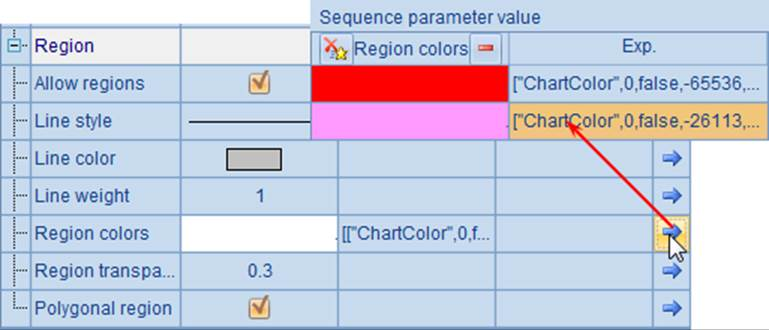
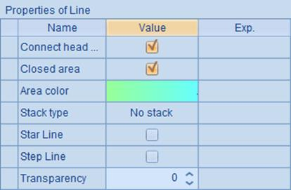
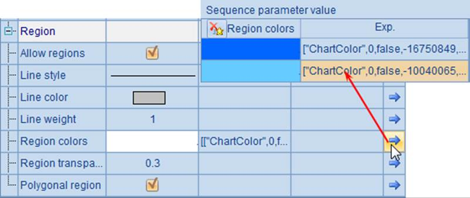
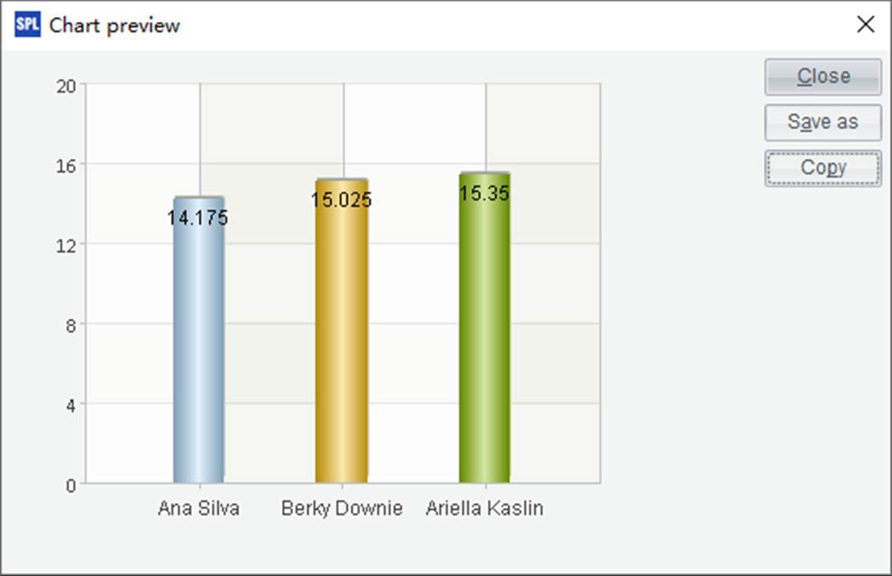

Let¡¯s fist look at the general charting procedure in esProc through the following code for drawing a column chart of vault competition results.
|
|
A |
|
1 |
=canvas() |
|
2 |
=demo.query("select * from GYMSCORE where EVENT = 'Vault'") |
|
3 |
=A1.plot("NumericAxis","name":"y","location":2,"labelFont":"Calibri", "labelOverlapping":true) |
|
4 |
=A1.plot("EnumAxis","name":"x","categories":A2.(NAME), "labelFont":"Arial") |
|
5 |
=A1.plot("Column","axis1":"x","data1":A2.(NAME),"axis2":"y", "data2":A2.(SCORE),"text":A2.(SCORE)) |
|
6 |
=A1.draw@p(450,350) |
To create an esProc chart, the first thing is defining a canvas, like A1¡¯s code =canvas(). With esProc, we define chart-specific data and chart parameters as well as draw the chart on a specified canvas. Usually one canvas object is used to draw one chart.
A2 retrieves the table sequence containing the required data:

The various styles of charts drawn on the canvas are all made up of the simplest geometric units, called as chart elements. A chart element is used to draw graphs with common features, and can make the charting simpler. You can draw common styles of charts through plotting chart elements with specified parameters. In A3, A4 and A5, =A1.plot(¡) is the function for plotting a chart element on A1¡¯s canvas. The vertical axis element plotted by A3 is a numeric axis; the horizontal axis element that A4 plots is an enumeration axis; and A5 plots the Column chart element. Together they construct a column chart. Different chart elements are plotted with different parameters.
After the chart elements are defined, we can start charting. A drawing function is used in A6¡¯s code =A1.draw@p(450,350), in which the chart¡¯s height and width, and the image file format, are specified. It sets the height to 450 pixel and the width to 350 pixel and uses @p option to return the chart in png format. When using G.draw() function, without any options, to plot a chart on canvas G, the chart is by default outputted as an svg vector image. Besides @p option, you can use @j to output jpg images and @g to output gif images.
A set of code for drawing a chart is referred to as the plotting algorithm, the execution of which by esProc will produce the chart through a painter.
Let¡¯s look at the result of using the above plotting algorithm. After the computation is completed, choose cell A6 where chart plotting code is held and click on Browse graphics icon at the right corner in the value viewing area to start drawing:

Alternatively, right-click on cell A6 and choose Browse graphics from the menu to execute chart plotting (or select A6 and click Edit>Browse graphics on the menu bar):

The chart plotted with this plotting algorithm will be displayed on the Chart preview window that pops up when plotting is completed. The chart area can be resized by dragging. The following is the finished chart:

There are Save as and Copy butttons on the Chart preview window for saving the chart as a local image file, and copying and pasting it for use in other tools (such as Word and Graphics tool).
So three steps are needed to draw a chart with esProc:
1. Create a canvas object using canvas() function.
2. Plot the chart elements step by step using G.plot() function.
3. Draw the chart using G.draw() function.